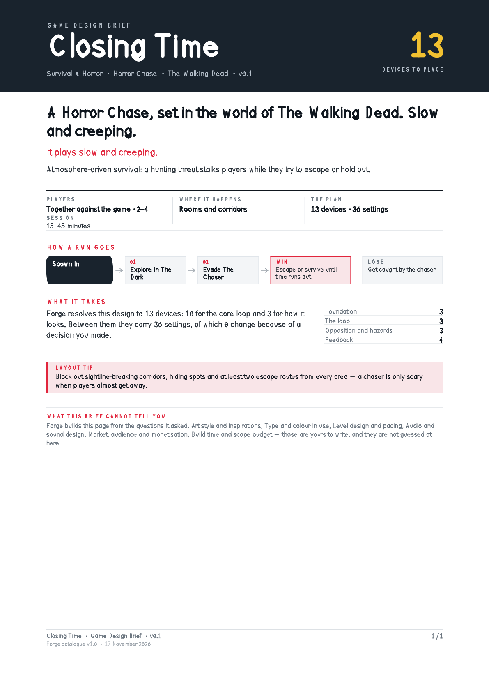

Design document · Structure A
The Brief
One page, for getting a yes. Everything a person deciding needs and nothing they do not — and a last block that says out loud what the tool cannot know.
The page


Why it is laid out this way
- The pitch is the hero. 18pt bold, under a dark band with the device count reversed out of it. If somebody reads one thing on this page, it is that sentence.
- The facts are a row of three, not five. Five cells fitted only if every value was short. Three wide cells fit the real values, and merging who you play with with how long that lasts is also how it is said out loud.
- The core loop is a rail, not a list. Entry, loop, outcomes — left to right, with the win and lose cards at the end. A loop drawn as bullet points stops looking like a loop.
- The build order is short on purpose. One line per phase. Anybody who wants the twenty steps behind it is the reader of Structure B, not this one.
- It ends with a confession. Six sections belong in a design document and are not derivable from a device questionnaire, so the page names them rather than padding them.
What this structure is bad at
No build detail
There is no room for a device's settings. A reader who wants to start building has to go to Structure B.
Nothing to audit
It says the plan has 13 devices and never shows them. If the number is wrong, the page cannot tell you — that is Structure C's job.
It dates badly
A persuasive page is written for a decision that happens once. Three weeks later it is the least useful of the three.
How it is made
Every structure in this set is generated by tools/gdds/ from the same resolved design — one document model, three layouts. The PDF is written directly, with base‑14 fonts and a hand‑written writer (pdf.mjs), so the export has no runtime dependency and the layout is deterministic. Every block declares the height it is allowed; a block that does not fit fails the build instead of silently losing its last line.
Type in the printed document is Helvetica and its base‑14 relatives rather than Forge's own Inter, because embedding a brand face in a PDF means shipping a TTF subsetter. That is the main cosmetic trade‑off in this set and it is a deliberate one.
These are mockups: nothing here is wired into the app yet, and the Summary screen does not export anything today. The three PDFs are real files, generated by node tools/gdds/render.mjs.